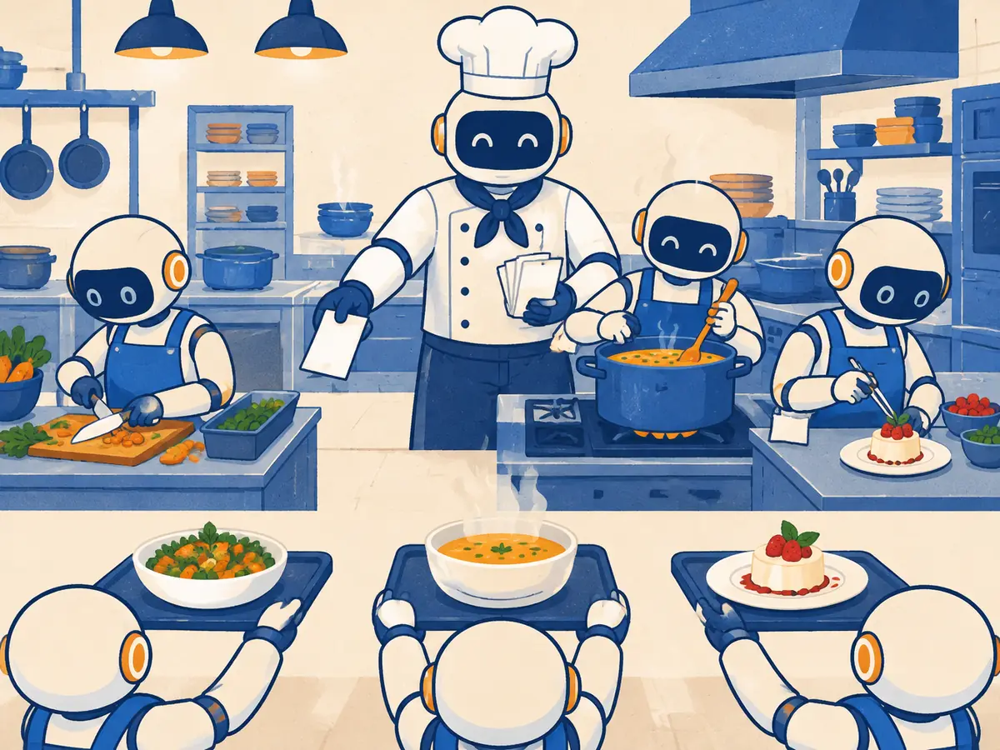

Subagents, multi-agent systems & A2A
One agent with one context window can only hold so much. Splitting work across subagents keeps each window clean and lets parts run in parallel, at a price. This lesson covers when that pays off, how agents from different companies can talk (A2A), and the parts of an agent system that should never depend on the model's mood: hooks, permissions and sandboxes.
By the end you can
- Explain what a subagent is and the orchestrator–worker pattern, and decide when multi-agent helps or hurts.
- Describe the Agent2Agent (A2A) protocol and how it differs from MCP.
- Choose hooks, permissions or a sandbox for rules that must hold no matter what the model decides.
Take your best guess. A wrong guess now makes the right answer stick later.
A lead agent hands a subtask to a subagent. What does the lead usually get back?
- The subagent's whole context window, every search result included
- A short summary of what the subagent found or did
- Nothing; subagents only write files
- A copy of the subagent's model weights
You want an agent to always run the code formatter after editing a file. The most reliable way is…
- Write "ALWAYS FORMAT" in capitals in the system prompt
- Ask it nicely at the start of every chat
- Use a bigger model
- A script that the agent software runs automatically after every edit
One window is not enough: subagents
Recap from SY.5: an agent is a model in a loop. It thinks, calls a tool, reads the result, and repeats until the task is done. Every tool result lands in the same context window. On a long task, that window fills up with search results, file contents and dead ends. Past a point, the model attends less well to what matters (AG.2), and eventually the window simply overflows.
People have tried teams of LLM agents since the early days. In 2023, research frameworks such as CAMEL (Li et al.), MetaGPT (Hong et al.) and AutoGen (Wu et al., Microsoft) had several LLM "agents" with different roles talk to each other. By 2025 the pattern that stuck in real products was simpler: subagents.
A subagent is a fresh agent the main agent starts for one subtask. It gets:
- its own, empty context window and a short brief (not the whole conversation);
- optionally its own instructions, tools and model (for example, read-only tools and a cheaper, faster model);
- one job: do the subtask, then return a short summary.
That buys three things:
- Context isolation. The 50 web pages a subagent skimmed never enter the main window; only the two-paragraph summary does.
- Parallelism. Independent subtasks run at the same time, so the wall-clock time is closer to one subtask than to all of them.
- Specialization. A "code reviewer" subagent can have a focused prompt and only read access; a "test runner" can have only the tools it needs.
Coding agents increasingly ship this built in. Claude Code, for example, lets you define subagents as Markdown files with a name, a description of when to use them, the tools they may use and the model to run; the main agent delegates to them and gets back only their summary. Other tools offer similar features under names like "background agents" or "tasks".
Explain like I'm 5

In a busy restaurant kitchen, the head chef robot doesn't cook every dish alone. It hands a ticket to each helper: one chops vegetables, one stirs the soup, one plates the dessert.
Each helper works at its own station, with its own mess. When it's done, it brings back a finished plate, not the peelings and dirty pots. The head chef only sees neat plates, so its counter stays clear and it can put the whole meal together.
The head chef is the orchestrator, the helpers are subagents, the tickets are briefs and the plates are summaries.
Where it breaks: kitchen helpers can glance at each other's stations and fix mismatches as they go. Subagents usually can't see each other at all, so if the soup and the dessert need to "match", someone has to say so in the tickets.
What is the main reason a subagent helps with a long research task?
- Its messy intermediate work stays in its own window; only a short summary reaches the main agent
- Subagents use a smarter model by definition
- Subagents never make mistakes
- It removes the need for tools
Orchestrator and workers: when it helps, when it hurts
The common multi-agent shape is orchestrator–worker: a lead agent plans, hands out briefs, collects summaries and writes the result. Step through it:
Anthropic described such a system for its Research feature in a June 2025 engineering post. A lead agent (Claude Opus 4) directed subagents (Claude Sonnet 4) that searched in parallel. On their internal research evaluation it beat a single Claude Opus 4 agent by 90.2%, and parallel subagents and tool calls cut research time by up to 90% on complex queries. The costs were just as clear: agents used about 4× the tokens of a normal chat, and multi-agent systems about 15×. On the BrowseComp benchmark, token usage alone explained about 80% of the variance in performance. Put simply, a big part of the gain is that the system spends more tokens, spread across many clean windows.
The same post is frank about where it fits badly: tasks where agents must share a lot of context or depend on each other. It notes that "most coding tasks involve fewer truly parallelizable tasks than research". The coding-agent company Cognition made the same point more bluntly in a June 2025 essay, "Don't Build Multi-Agents": subagents that see only a summary miss decisions made elsewhere, so their pieces don't fit together. In an April 2026 follow-up, Multi-Agents: What's Actually Working, it described the narrower pattern that does: extra agents may contribute ideas and checks (a reviewer, a “smart friend” to consult), but the writing stays in one thread.
| Good fit for subagents | Poor fit |
|---|---|
| Broad research with independent parts (three cities, ten competitors) | Tightly coupled work: most code edits, where every change depends on shared decisions |
| Read-only exploration: "find every place we call the payments API" | Several agents editing the same files at once |
| Independent checks: review, test, security scan, each returning findings | Small tasks: the coordination costs more than the work |
| The main window keeps overflowing with raw material | Tight budgets: expect several times the tokens |
A safe default: start with one agent. Add subagents for read-heavy, parallel, separable work that returns a summary. Keep writes in one place. Measure cost and quality on your own tasks (M4.7) before you scale it up.
Your team wants three agents to refactor three tightly linked modules at the same time. What is the main risk?
- The context windows will be too small
- It will be too cheap
- Each agent sees only its brief, so they make conflicting decisions and the pieces don't fit
- Subagents can't edit code
A2A: when agents from different teams must talk
Subagents live inside one app, built by one team. But what if your travel agent needs to book with an airline's agent, built by another company on another framework? Neither side wants to expose its internal tools, prompts or memory. They need a shared language for one agent to hand a job to another.
That is the Agent2Agent (A2A) protocol. Google announced it in April 2025 with more than 50 partner companies, and in June 2025 handed it to the Linux Foundation as a vendor-neutral project, with AWS, Cisco, Google, Microsoft, Salesforce, SAP and ServiceNow among the founding members. In August 2026 it was reported to be moving into the Agentic AI Foundation, the same Linux Foundation home as MCP. Its main ideas:
- Agent Card: a small JSON "business card" each agent publishes at a well-known web address: its name, what it can do (its skills), where to reach it and how to authenticate. Other agents read it to discover what it offers.
- Task: a unit of work with an id that moves through states such as working, input-required (the remote agent has a question) and completed or failed. Tasks can take seconds or days.
- Messages and artifacts: the agents exchange messages while working; the outputs (a document, a booking, an image) come back as artifacts.
- Plumbing: JSON-RPC 2.0 over HTTPS, with streaming updates and push notifications for long jobs.
Agents stay opaque: the airline's agent never shows its internal tools or reasoning, only its card, its progress and its results.
| MCP (AG.3) | A2A | |
|---|---|---|
| Connects | An agent to tools and data | An agent to another agent |
| The other side is | A function: does one thing, returns a result | A peer that thinks, may ask questions, may take hours |
| Discovery | The client asks a server for its tool list | Read the remote agent's Agent Card |
| Typical use | Read the calendar, query a database, open a ticket | Hand a whole job to a partner's or another team's agent |
The two fit together: your travel agent uses MCP to read your calendar and A2A to ask the airline's agent to book a seat. On the "where to use what" map (AG.1): a big task with separable parts, or a window that keeps overflowing → subagents; agents built by different teams or vendors that must cooperate → A2A. As of 2026, A2A shows up mostly in enterprise agent platforms; if all your agents live in one app, plain subagents are simpler.
Your agent needs to look up rows in your own Postgres database. Which protocol fits?
- A2A, because the database is another agent
- MCP (or plain function calling): the database is a tool, not a peer agent
- Neither; agents can't use databases
- Both, always
Hooks, permissions and sandboxes
Everything so far is guided by prompts and rules files, and a model follows those most of the time. Some things must hold every time: code gets formatted, tests run before "done", nobody drops the production database. Those belong in deterministic code, not in a prompt.
Hooks are scripts the agent software runs automatically at fixed points in its loop: when a session starts, before a tool call, after a tool call, when the agent says it's finished. Claude Code's docs describe the point well: hooks give "deterministic control: certain actions always happen rather than relying on the LLM to choose to run them." Several other agents now offer similar hooks. Two typical examples, in Claude Code's format:
{
"hooks": {
"PostToolUse": [{
"matcher": "Edit|Write",
"hooks": [{
"type": "command",
"command": "jq -r '.tool_input.file_path' | xargs npx prettier --write"
}]
}]
}
}#!/bin/bash
COMMAND=$(jq -r '.tool_input.command')
if echo "$COMMAND" | grep -qi "drop table"; then
echo "Blocked: dropping tables is not allowed" >&2
exit 2 # exit code 2 = block the action, tell the model why
fi
exit 0Hooks are one of three layers of control that don't depend on the model's judgement:
- Permissions: which tools the agent may use without asking, which need your approval (anything that deletes, sends, pays or deploys), and which are denied outright. Start with the least it needs.
- Hooks: your own checks and automations at lifecycle events: format, lint, run tests, block risky commands, log every tool call.
- Sandboxes: run the agent in a container or VM with limited files and network access, so even a confused or tricked agent (for example by instructions hidden in a web page, SY.7) can't reach your secrets or production systems.
One warning: hooks are scripts that run with your permissions. Review hooks that come with someone else's project or plugin before you enable them, exactly as you would review any script.
Which requirement needs a hook (or permission rule) rather than a line in AGENTS.md?
- "Prefer descriptive variable names"
- "API handlers live in
src/api/" - "We use pnpm, not npm"
- "The agent must never run
git push --forceon main"
A colleague says: "Multi-agent is always better, more agents means more brainpower." How do you answer?
In Anthropic's June 2025 report on its multi-agent research system, what explained most of the variance in performance on BrowseComp?
- The number of subagents
- The length of the system prompt
- How many tokens were used
- Which programming language the tools used
What is an A2A Agent Card?
- A JSON description an agent publishes: its name, skills, endpoint and how to authenticate
- A list of every tool and prompt inside the agent
- A payment card agents use to buy compute
- The agent's memory file
The single-agent loop from SY.5 is "think, call a tool, read the result, repeat". Which problem with that loop do subagents mainly address?
- The model can't call tools
- Every tool result piles into one context window until it is crowded or full
- The loop can't stop
- Tools always return errors
Which pairing is right?
- Format after every edit → a line in the system prompt
- Your agent hands a booking job to a partner company's agent → MCP
- Read your own calendar → A2A
- Never let the agent touch production credentials → a sandbox plus permission rules
Key takeaways
- A subagent gets a fresh context window and a brief, works (often in parallel) and returns a short summary: isolation, parallelism, specialization.
- Orchestrator–worker shines on broad, separable, read-heavy work; it costs several times the tokens and hurts on tightly coupled work such as most coding. Keep writes in one thread.
- A2A (Google, April 2025; Linux Foundation since June 2025) lets agents from different teams cooperate via Agent Cards and tasks. MCP = agent ↔ tool; A2A = agent ↔ agent.
- What must always happen goes in code: hooks, permissions and sandboxes, not prompts.
Adding cards schedules your first spaced review.